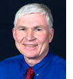

|
|
|
WELCOME
The heart of the Carpe Diem Project is its network — a group of more than 500 western water leaders grappling with the
challenges of climate change. Each month, this newsletter will focus on an issue that the leadership network is thinking
about. This month we highlight Lillian Kawasaki, of the Water
Replenishment District (based in Southern California) and a Project team member, and Eric Kuhn, General
Manager of the Colorado River Water Conservation District (a
few thousand miles up the watershed from Los Angeles) and a Project advisor. We asked Lillian and Eric to talk about the water,
energy and climate change nexus in the West.
As the Project's just-released Report from the Field 2007-2009
outlines, that challenge is one of our three priority initiatives this Fall. Working with the leadership network, we'll bring in
the best science to help us better understand the scope and long-term implications and then begin to craft joint responses for
smart, science-based policies and management options. We'll be asking for your feedback and sharing the results of that work over
the next six months. For more information on the Carpe Diem Project you can read our reports here.
Kimery Wiltshire
Director, Carpe Diem Project
|
AN INTERVIEW WITH LILLIAN KAWASAKI
Showers to Flowers
|
"Then I realized that climate change and drought are not the same thing."
|
Q: Describe an "Aha!" moment when you realized the level of impact climate change has on western water.
A: Like so many people, I had assumed that the water crisis was the result of a drought, and as such it might be a
short-term and cyclical situation. Then I realized that climate change and drought are not the same thing. The
impacts associated with climate change are long term and have implications with much greater impact.
Read more.
|
|
AN INTERVIEW WITH ERIC KUHN
When the Past is Not Predictive
|

"Water districts that are going to have to make changes can't do so when the public
is still split 50-50 on whether climate change is real."
|
Q: How did you come to understand the relationship between climate change and western water?
A: After years of good water supplies in the mid through late nineties, the Colorado River Basin hit a dry
period and the question became, "Are things fundamentally changing or will we go back to the previous wet period?"
The reality is that because of climate change, we don't have that answer yet. But there is definitely a connection.
Read more.
|
|
|